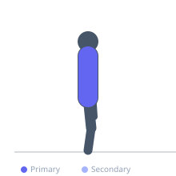

Exercise guide / Thoracic Foam Roller Extension with Arm Sweeps
Thoracic Foam Roller Extension with Arm Sweeps
A dynamic progression of the passive thoracic extension over a foam roller that adds active arm sweeps. While draped over the roller in thoracic extension, the exerciser sweeps both arms overhead and back in a controlled arc, adding active thoracic mobilization and latissimus dorsi stretching to the passive extension component. The arm sweep increases the range demands at each thoracic segment and trains active control of the newly gained mobility.
Primary muscles
erector spinae
latissimus dorsi
Secondary muscles
pectoralis major sternal
pectoralis minor
Equipment
No Equipment (Bodyweight)


Starting position
- Position the foam roller perpendicular under the mid-thoracic spine. Support the head. Begin with arms crossed over the chest.
Setup
- Same setup as standard thoracic roller extension. Ensure the roller is at the target thoracic segment before adding the arm sweep.
Steps
- Step 1: Position over the roller and allow the thoracic segment to extend over it.
- Step 2: Begin the arm sweep by uncrossing the arms and sweeping them overhead in a large arc, reaching as far overhead as shoulder mobility allows.
- Step 3: Hold the overhead reach for 2-3 seconds, feeling the combined thoracic extension and lat stretch.
- Step 4: Sweep the arms back to the chest. Repeat 5-8 times on each thoracic segment before moving the roller.
Coaching cues
- Breathe out as the arms go overhead — the exhale helps the chest open
- Reach long through the fingertips on the sweep
- Feel the stretch from your hips through your armpits to your fingertips on the overhead position
Breathing
- Exhale as you sweep the arms overhead — this assists thoracic opening. Inhale as you return.
Range of motion
- Arms sweep to whatever overhead range is comfortable. The thoracic extension and arm sweep combine to create a greater total stretch than either alone.
Tempo
- 2s arm sweep overhead, 2s hold, 2s return. 5-8 reps per thoracic level.
Common mistakes
- Moving the roller before the arm sweep — the sweep should deepen the mobilization at each level before moving on
- Forcing overhead range that is not available — only reach as far as comfortable
- Letting the lower back extend — the lumbar spine should not arch over the roller
Safety
- Avoid if shoulder pain increases with overhead movement
- Osteoporosis or vertebral fracture history — consult a physiotherapist
Training
- mobility: 5–8 reps
- mobility: 1–2 sets
- Rest: {'mobility': 30}